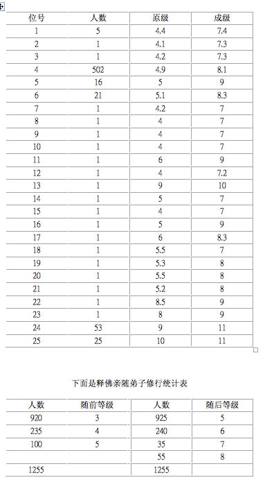

第一部 瑜伽行
第八篇 九阳功
第六十七集 梦幻天堂
上两集的统计分析是十分重要的，对现行的修行者来说，不仅能起到宏观上的指导，同时也是微观上的指南，尚且可使修行者及组织者有个较为清醒的头脑。为此，列表如下，以供读者仔细把握。
《楞严经》中25位共641人，其中4级—6级者为560人，修成后其能量等级为7—9级。8级—10级者为81人，修成后其能量等级为9—11级。

上述两个表中，亲随弟子是指现世的凡人，而楞严会上作证的大多是往世早就修成菩萨或罗汉的天人。在凡人中的1255名弟子，都有一定的修行基础，即3级以上能量，而且是一直随行释佛进行修持。在释佛亲自指导下修成，修出三界的成功率仅为7．17％。足见，修出去这句话，并非是那么容易的事。现代人若真要修出去，不日夜加倍努力，而且还要得法，那是不可能的事。没有七级以上的能量，过不去断魂关。释佛为什么预言佛法会灭？人人都修不出去，修不上去，自然会断灭。在荒年中，颗粒无收，就是再好的金子也没有用了。若是放低修行的标准，比如规定，三级就可修出去。人们会很高兴，但那是骗人的，断魂关的通行证就只是七级。

| 回 首 頁 | 上 一 頁 | 下 一 頁 | 回 主 頁 |